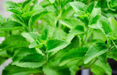

ANDINOMIX 5X
Multiplica tu salud, divide tus enfermedades
Multiplica tu salud, divide tus enfermedades
ANDINOMIX 5X es innovación huancavelicana de la Institución Educativa JEC "TUPAC AMARU" de Buenavista. Mientras las marcas comerciales solo ofrecen azúcar y saborizantes artificiales, nosotros ofrecemos un botiquín y un alimento andino listo para tomar. Como dice nuestro eslogan: ¡ANDINOMIX 5X: Cinco poderes andinos para cuidar tu vida!.
ANDINOMIX 5X no solo es una bebida saludable e innovadora, sino también una propuesta que revaloriza los recursos nativos, fortalece la identidad cultural andina y genera oportunidades de emprendimiento sostenible para nuestra comunidad.
Conoce Más Comprar AhoraAdemás, los agricultores locales tienen pocas oportunidades para transformar y dar valor agregado a estos productos, lo que limita sus ingresos y el desarrollo de emprendimientos sostenibles en la región.
ANDINOMIX 5X propone la elaboración de un polvo disolvente instantáneo a base de ayrampo silvestre arbustivo de Huancavelica, haba andina y estevia natural. Este producto busca ofrecer una alternativa práctica y natural para la preparación de bebidas, promoviendo el consumo de ingredientes andinos con valor cultural y nutricional.
El producto contribuye a revalorizar los recursos locales, generar oportunidades de emprendimiento para los productores de la zona y fomentar el consumo de productos originarios de los Andes. Además, su presentación en polvo instantáneo facilita su preparación, transporte y conservación, convirtiéndolo en una opción innovadora para estudiantes, familias y consumidores que buscan productos derivados de recursos naturales andinos.
Elaborar y comercializar ANDINOMIX 5X, un polvo disolvente instantáneo a base de ayrampo silvestre arbustivo de Huancavelica, haba andina y estevia natural, promoviendo el aprovechamiento sostenible de los recursos andinos, la innovación alimentaria y el desarrollo económico de los productores locales, ofreciendo a los consumidores un producto práctico, natural y con identidad cultural.
Ser una marca líder y reconocida a nivel regional y nacional por la elaboración de productos innovadores derivados de recursos andinos, contribuyendo a la revalorización del ayrampo silvestre arbustivo de Huancavelica y al fortalecimiento de emprendimientos sostenibles que generen bienestar económico, social y cultural para las comunidades andinas.

Fruto andino tradicional utilizado por generaciones en las comunidades altoandinas. Aporta color natural, identidad cultural y valor agregado al producto, revalorizando un recurso nativo de la región.

Ingrediente ancestral cultivado en los Andes peruanos. Es reconocida por su aporte de proteínas vegetales, fibra y nutrientes que forman parte de una alimentación equilibrada.

Endulzante de origen vegetal que proporciona dulzor natural al producto sin necesidad de utilizar azúcar refinada, mejorando el sabor de manera natural.